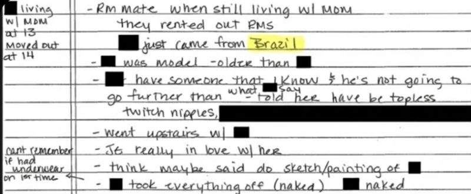
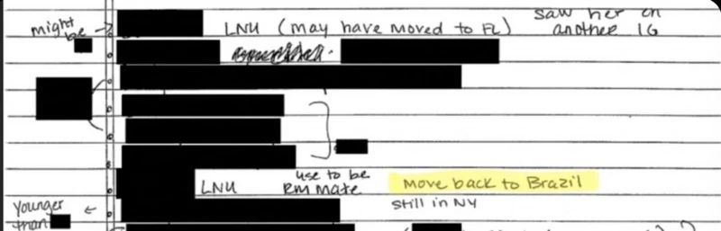
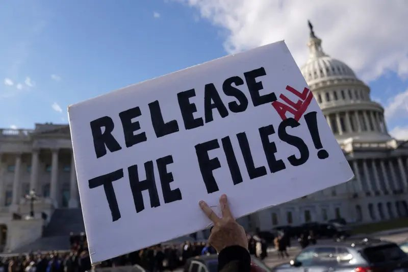

'Major Brazilian group' revealed in Epstein documents
O elo do caso Jeffrey Epstein com o Brasil revelado em novos documentos: 'Grande grupo brasileiro'
A 'major Brazilian group' mentioned in FBI interviews
Um 'grande grupo brasileiro' é mencionado em depoimento ao FBI

A "major Brazilian group" is mentioned in a testimony to the FBI, the federal police agency, which is part of tens of thousands of documents released by the U.S. Department of Justice about the case of billionaire Jeffrey Epstein, a convicted sex offender who died in 2019.
Um "grande grupo brasileiro" é mencionado em um depoimento ao FBI, a polícia federal americana, que integra dezenas de milhares de documentos divulgados pelo Departamento de Justiça dos Estados Unidos sobre o caso do bilionário Jeffrey Epstein, criminoso sexual condenado nos Estados Unidos e morto em 2019.
The files were made public on Friday, December 19, following a determination by the U.S. Congress, and bring together materials from investigations into sexual abuses and trafficking of women and girls attributed to Epstein.
Os arquivos foram tornados públicos na sexta-feira (19/12), após determinação do Congresso americano, e reúnem materiais de investigações sobre abusos sexuais e tráfico de mulheres e meninas atribuídos a Epstein.
The reference identified by BBC News Brasil appears in handwritten notes based on an FBI interview dated May 2, 2019. The content deals with people who may have been brought as potential victims to sexual encounters, including minors.
A referência identificada pela BBC News Brasil aparece em anotações manuscritas baseadas em uma entrevista do FBI, de 2 de maio de 2019. O conteúdo trata de pessoas que podem ter sido levadas como possíveis vítimas para encontros sexuais, inclusive menores de idade.
Much of the material is redacted, which prevents the identification of people involved or full understanding of the context. The file bears the title "Interview of [information redacted]." In the description field, you can read "original interview notes of [information redacted]. Photos provided by [information redacted]."
Grande parte do material está tarjada, o que impede a identificação de pessoas envolvidas ou a compreensão integral do contexto. O arquivo leva o título de "Entrevista de [informação tarjada]". A seguir, no campo da descrição, é possível ler "notas originais da entrevista de [informação tarjada]. Fotos fornecidas por [informação tarjada]."
The records are part of a larger set of thousands of files that includes photos, videos, and investigation documents compiled by American authorities over the years.
Os registros fazem parte de um conjunto maior de milhares de arquivos que inclui fotos, vídeos e documentos de investigação reunidos por autoridades americanas ao longo de anos.
Document trail in Epstein files
Rastro de documentos nos arquivos de Epstein

Discriminatory preferences documented in Epstein files
'Ele não queria garotas escuras'

According to the deposition document, a person cited as "JE" (possibly Jeffrey Epstein) had imposed criteria on the girls presented to him, stating he did not want "Spanish or dark girls" (by context, apparently referring to Latin/Hispanic women).
Segundo o documento do depoimento, uma pessoa que é citada como "JE" (possivelmente Jeffrey Epstein) teria imposto critérios sobre as meninas que lhe eram apresentadas, afirmando que não queria "Spanish or dark girls" (pelo contexto, aparentemente referindo-se a latinas/hispânicas).
In one section, the annotations describe physical characteristics of a person cited as having "darker skin" and "Amazonian appearance," who had been "brought at the end, in a moment of desperation," when those involved were "running out of girls."
Em um trecho, as anotações descrevem características físicas de uma pessoa citada como de "pele mais escura" e "aparência amazônica", que teria sido "trazida no final, em momento de desespero", quando os envolvidos estariam "ficando sem garotas".
In another part of the handwritten account there is a mention of someone who "had just come from Brazil" and "was a model." The document states that JE "was really in love with her" and that "perhaps spoke of doing a sketch or painting."
Em outra parte do relato manuscrito há uma menção a alguém que "teria acabado de vir do Brasil" e "era modelo". O documento diz que JE "realmente estava apaixonado por ela" e que "talvez tenha falado em fazer um esboço ou pintura".
A side annotation says "living with the mother at 13, left home at 14." The same document also brings photos with captions about a "Brazilian party" and a "Brazilian parade," but redactions prevent the identification of the location or the people involved.
Uma anotação lateral diz "vivendo com a mãe aos 13, saiu de casa aos 14". O mesmo documento traz ainda fotos cujas legendas falam sobre uma "festa brasileira" e um "desfile brasileiro", mas tarjas impedem a identificação do local ou das pessoas envolvidas.
Age preference pattern documented
Padrão de preferência de idade documentado
"At one point, [redacted] saw him asking for ID from the girls. He wanted to make sure they were under 18 because he wasn't believing them, since [redacted] had messed everything up by bringing older girls."
"Em certo momento, [tarja] o viu pedindo documento de identidade para as meninas. Ele queria se certificar de que tinham menos de 18 anos porque não estava acreditando nelas, já que [tarja] tinha bagunçado tudo ao levar garotas mais velhas."
Brunel's 2019 Brazil visit and modeling agency contacts
Parceiro de Epstein buscou modelos em agência brasileira em 2019

Beyond the testimony now disclosed, reporting from the past years in Brazil and other countries confirm that a known partner of Epstein was in Brazil in 2019. The partner is French ex-model agent Jean-Luc Brunel, also accused of trafficking women.
Além do relato envolvendo brasileiros agora divulgado, reportagens publicadas nos últimos anos no Brasil e em outros países afirmam que um conhecido parceiro de Epstein esteve no Brasil em 2019. O ex-agente de modelos francês Jean-Luc Brunel, também acusado de ter traficado mulheres.
Brunel was found dead in a Paris prison in France in 2022. He had been detained since the beginning of a formal investigation, after being accused of sexual harassment and rape against young people aged 15 to 18 in France. He denied the accusations.
Brunel foi encontrado morto na prisão em Paris, na França, em 2022. Estava detido desde o início de uma investigação formal, após ser acusado de assédio sexual e estupro contra jovens com idades entre 15 e 18 anos na França. Ele negava as acusações.
The agent was a co-founder of the French modeling agency Karin Models, created in 1977, and MC2 Models Management in the United States, which counted on Epstein's financing. U.S. Court documents have pointed out that Brunel recruited girls for Epstein, promised modeling contracts to them, and took them on a plane from France to the United States.
O agente era cofundador da agência de modelos francesa Karin Models, criada em 1977, e da MC2 Models Management, nos Estados Unidos, e contava com financiamento de Epstein. Documentos da Justiça dos Estados Unidos apontaram que Brunel recrutava garotas para Epstein, prometia contratos no mundo da moda para elas e as levava em um avião da França para os Estados Unidos.
A report by the British newspaper The Guardian, published in August 2019, relates that while Epstein's allies disappeared from public life in the years following his plea agreement, "Brunel continued traveling the world in search of young women and girls to turn into models."
Uma reportagem do jornal britânico The Guardian, publicada em agosto de 2019, relata que enquanto aliados de Epstein desapareceram da vida pública nos anos seguintes ao seu acordo judicial, "Brunel continuou a viajar pelo mundo em busca de mulheres jovens e meninas para transformá-las em modelos".
The newspaper reported that Brunel was in Brazil in 2019 to "find new models to take to the United States" and that when a reporter visited a Miami apartment owned by Brunel, the door was answered by a young woman who said she was a Brazilian model who was there to work for MC2, his agency, and that there were at least three other models staying in the apartment.
O jornal afirmou que Brunel esteve no Brasil em 2019 para "encontrar novas modelos para levar aos Estados Unidos" e que, quando um repórter visitou um apartamento em Miami de propriedade de Brunel, a porta foi atendida por uma jovem que disse ser uma modelo brasileira que estava lá para trabalhar para a MC2, sua agência, e que havia pelo menos outras três modelos hospedadas no apartamento.
The Mega Model Brasília connection
'Ele apenas foi na agência fazer uma visita'

Another report by the Agência Pública published in November showed a photo of Brunel released in 2019 by a modeling agency, Mega Model Brasília, with a caption stating that he "was here [in Brasília] today for a casting to take our models to New York."
Outra reportagem da Agência Pública, publicada em novembro, mostrou uma foto de Brunel divulgada em 2019 por uma agência de modelos, a Mega Model Brasília, com legenda afirmando que ele "esteve aqui [em Brasília] hoje para um casting para levar os nossos modelos para Nova Iorque".
Nivaldo Leite, director of the agency, tells BBC News Brasil that there was no contact with Brunel after the visit and that no model from the Brazilian agency would have traveled with him. According to the report, Brunel also visited cities in other States.
Nivaldo Leite, diretor da agência, diz à BBC News Brasil que não houve qualquer contato com Brunel depois da visita e que nenhum modelo da agência brasileira teria viajado com ele. Segundo a reportagem, Brunel também teria visitado cidades em outros Estados.
BBC News Brasil found the same image still available on social media, on the agency's Facebook page. In addition to the photo, there are at least two videos of models parading in the same publication, reposted by the agency director on his Facebook profile, with the same text saying that Brunel and his team "will always be welcome in our house."
A BBC News Brasil encontrou a mesma imagem ainda disponível na rede social, na página da agência no Facebook. Além da foto, há ao menos dois vídeos de modelos desfilando na mesma publicação, republicados pelo diretor da agência em seu perfil no Facebook, com o mesmo texto que diz que Brunel e sua equipe "sempre serão bem-vindos à nossa casa."
BBC News Brasil asked the Brazilian government whether there is or has been any initiative to identify Brazilians in the Epstein case. The Ministry of Justice and Public Safety and the Itamaraty informed that the demand should be made to the Federal Police, which in turn responded that it "does not comment on ongoing investigations."
A reportagem perguntou ao governo brasileiro se há ou houve qualquer iniciativa no sentido de identificar brasileiros no caso Epstein. O Ministério da Justiça e Segurança Pública e o Itamaraty informaram que a demanda deveria ser feita à Polícia Federal, que por sua vez respondeu que "não se manifesta sobre investigação em curso".
Mega Model agency response and clarification
Mega Model: 'Apenas uma visita'

Nivaldo Leite, director of Mega Model, states to BBC News Brasil that Brunel "merely visited the agency and got to know our structure," but that no model from the agency traveled or made contact with him afterward.
Nivaldo Leite, diretor da Mega Model, afirma à BBC News Brasil que Brunel "apenas foi na agência fazer uma visita e conhecer nossa estrutura", mas que nenhum modelo da agência viajou ou fez contato com ele depois.
"Absolutely certain no one! I personally handle the international for the agency," he says. He stated that the company was not contacted by any authority for information about Brunel.
"Certeza absoluta que nenhuma! Quem faz internacional da agência sou eu pessoalmente", diz. Ele afirmou que a empresa não foi contatada por nenhuma autoridade para dar informações sobre Brunel.
Leite says that Brunel was in Brasília visiting agencies and asked if he could visit Mega Model. "We had just inaugurated the physical structure in the shopping."
Leite afirma que Brunel estava em Brasília visitando agências e perguntou se podia conhecer a Mega Model. "Havíamos acabado de inaugurar a estrutura física no shopping."
Leite states that he did not know Brunel or Epstein, not even by name. "The agency was in the shopping open to everyone. I remember that he was even in a rush due to the flight," he says.
Leite afirma que não conhecia Brunel nem Epstein, nem mesmo de nome. "A agência ficava no shopping aberta a todo mundo. Lembro que ele estava até apressado devido ao voo", afirma.
"He knew the space, told me he was the owner of an international agency in Europe, if I'm not mistaken. I think he left a business card of his, in case I was interested in partnerships. Soon after came the pandemic and I never heard from him again. I don't even know if he's alive and I know nothing about his agency," he continues.
"Conheceu o espaço, me falou que era dono de uma agência internacional na Europa, se não me engano. Acho que deixou um cartão de visita dele, caso eu tivesse interesse em parcerias. Logo após veio a pandemia e nunca mais ouvi falar dele. Não sei nem se ele está vivo e tampouco sobre a agência dele", prossegue.
"I didn't even know about his relations and nor of this person [Epstein] that is asking me. I didn't have absolutely no conversation with him with a personal bias."
"Não sabia nem de relações dele e nem desta pessoa [Epstein] que está me perguntando. Não conversei absolutamente nada com ele com viés pessoal."
In a statement sent to BBC on Friday, February 13, Mega Model said that "the agency never maintained any commercial relationship, partnership, or link with Jean-Luc Brunel or Jeffrey Epstein."
Em nota enviada à BBC nesta sexta-feira (13/2), a Mega Model disse que "a agência jamais manteve qualquer relação comercial, parceria ou vínculo com Jean-Luc Brunel ou Jeffrey Epstein."
Mega Model's statement to BBC News Brasil
Posicionamento da Mega Model à BBC News Brasil
"The fact that Mega Model Brasil appears in documents released by the FBI and U.S. Justice as a company that refused to sign contracts with MC2 only proves the rigorous system of ethics and protection of the Brazilian agency. Contrary to having been 'cited in the scheme,' Mega Model was cited by Brunel as an agency that boycotted him and protected its represented models from any risk environment as soon as the first signs of misconduct came to light."
"O fato de a Mega Model Brasil constar em documentos liberados pelo FBI e pela justiça americana como uma empresa que se negou a assinar contratos com a MC2 apenas comprova o rigoroso sistema de ética e proteção da agência brasileira. Ao contrário de ter sido 'citada no esquema', a Mega Model foi citada por Brunel como uma agência que o boicotou e protegeu seus agenciados de qualquer ambiente de risco assim que os primeiros indícios de má conduta vieram à tona."